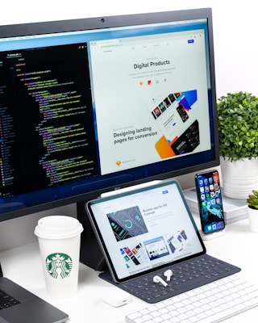

Explore Our Course Offerings

At Bidur Academy, we offer a comprehensive range of courses designed to meet the diverse needs of students at different skill levels. Whether you are a beginner looking to start your journey in technology or an experienced professional seeking to upgrade your skills, we have the right program for you. Our courses are carefully crafted by industry experts and updated regularly to ensure they remain relevant to current market demands. Each program combines theoretical foundations with practical applications, providing students with hands-on experience using industry-standard tools and technologies. Our flexible learning options include full-time, part-time, and online courses to accommodate various schedules and learning preferences.
Web Development Program
Our Web Development program is one of our most popular offerings, providing comprehensive training in both front-end and back-end development technologies. Students learn HTML, CSS, JavaScript, and modern frameworks like React and Vue. The program also covers server-side programming, database management, responsive design principles, and web security best practices. Throughout the course, students work on real-world projects that build their portfolio and prepare them for professional web development roles. Our graduates are equipped to create dynamic, user-friendly websites and web applications that meet industry standards and exceed client expectations.
Course Highlights:
- Duration: Six months intensive program
- HTML5 and CSS3 fundamentals
- JavaScript and modern frameworks
- Responsive web design principles
- Backend development with Node.js
- Database design and management
- Version control with Git
- Project portfolio development
Data Science and Analytics

The Data Science and Analytics program prepares students for careers in one of the fastest-growing fields in technology. This comprehensive course covers statistical analysis, machine learning algorithms, data visualization, and big data technologies. Students learn to work with Python, R, SQL, and popular data science libraries. The curriculum includes practical training in data cleaning, exploratory data analysis, predictive modeling, and communicating insights effectively. Students complete capstone projects using real datasets, gaining valuable experience in solving complex business problems through data-driven approaches.
Course Topics:
- Statistical Analysis and Probability
- Python Programming for Data Science
- Machine Learning Fundamentals
- Data Visualization Techniques
- SQL and Database Management
- Big Data Technologies
- Business Intelligence Tools
- Capstone Project
Additional Programs
We also offer specialized courses in Mobile App Development, Cloud Computing, Cybersecurity, Artificial Intelligence, and Software Engineering. Each program is designed with input from industry partners to ensure graduates have the skills that employers are actively seeking. Our courses include career preparation workshops, interview coaching, and networking opportunities with potential employers. Many of our students secure job offers before completing their programs, thanks to our strong industry connections and comprehensive career support services.